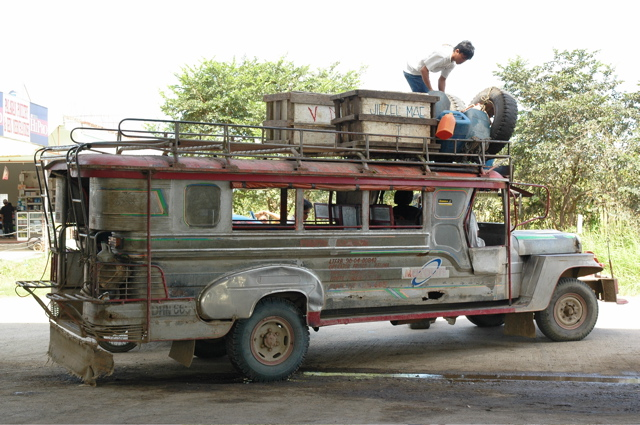
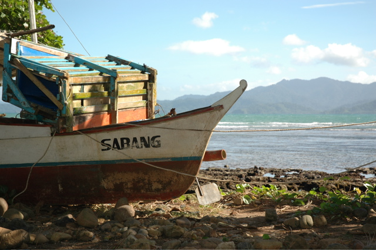
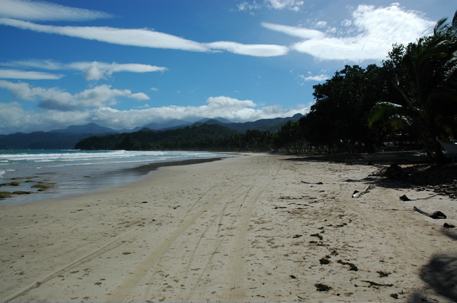
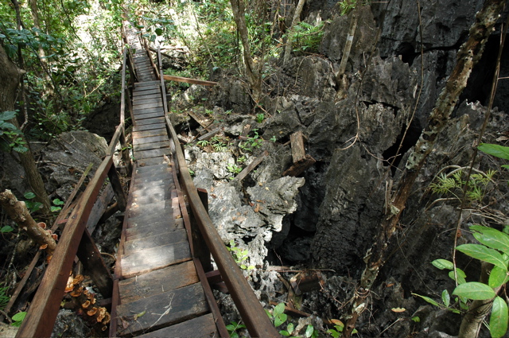
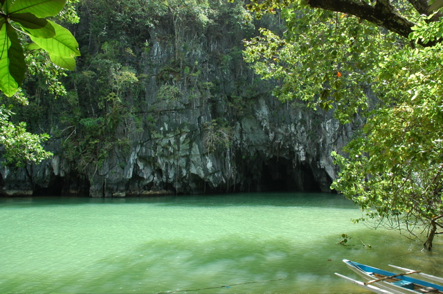
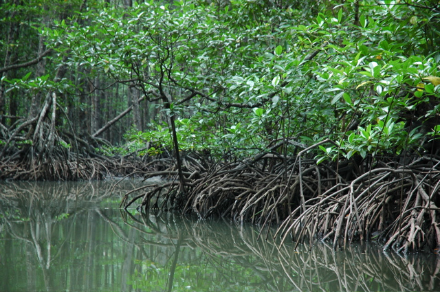

Natürlich wollten wir nicht allzu lange in Städten bleiben und haben uns wieder auf den Weg gemacht. Mit dem Flugzeug sind wir von Manila nach Puerto Princesa, der Hauptstadt der Insel Palawan, geflogen. Von Puerto Princesa wollten wir ein Jeepney bis zum Dorf Sabang nehmen.
Den ersten Rückschlag erhielten wir an der Jeepney-Haltestelle, weil wir 2 Stunden warten mussten. Als es dann endlich so weit war, haben wir mit einigen Anderen die Karre erwartungsvoll gestürmt. Über eine Stunde lang passierte dann aber nichts mehr, außer dass immer mehr Leute kamen und sich mit hinein gequetscht haben. Das erste Nahziel des Jeepneys war dann die Tankstelle auf der gegenüber liegenden Straßenseite. Dort wurde nicht nur genüßlich getankt, sondern auch die erste Pinkelpause der meisten Fahrgäste gemacht. Außerdem wurden alle Kinder mit Leckeis versorgt. Nächster Stopp war leider schon wieder ein paar Meter weiter, wo wir eine Weile warten mussten um anschließend riesige Eisklötze aufs Dach geladen zu bekommen.
Nachdem die Jeepney-Crew so eine knappe Stunde lang Kleinkram erledigt hatte, ging es dann endlich los. Die Fahrt dauerte, wie erwartet, drei Stunden und führte 50 km größtenteils über eine Schotterpiste. Das wäre nicht so schlimm gewesen, wenn sich nicht nach ein paar mehr Stopps über 40 (!) Passagiere allein im Innenraum gesammelt hätten. Der untere Meter des Wagens war vollständig von Kindern, Gepäck und Müll ausgefüllt. Leider haben die Einheimischen das Jeepney auch zum Transport von altem Fisch missbraucht. Am Schluss war es so eng, dass sich niemand mehr bewegen konnte, die Leute durchs Fenster aussteigen mussten, Kinder auf anderen Menschen (z.B. uns) schliefen und kein Licht mehr durch die Fenster drang.
Nach fast 12 Stunden sind wir endlich in Sabang angekommen, das aber schon auf den ersten Blick die Mühen entschädigen konnte. Die große Bucht mit ihrem endlosen Strand wird von starkem Wellengang bedrängt und Wind schüttelt die Palmen. Direkt dahinter beginnt der Urwald.
09/01/2006
Wir haben den beschwerlichen Weg nach Sabang angetreten, weil es hier in der Nähe einen unterirdischen Fluss gibt, der natürlich auch zum Weltnaturerbe gehört.
Mit ausreichend Wasser ausgerüstet sind wir zu Fuß dorthin aufgebrochen. Der Weg führt zuerst über den Monkey-Trail und später über den Jungle-Trail. Drei Stunden lang sind wir, tatsächlich über Stock und Stein, durch diesen tollen Urwald gelaufen. Die Parkleitung hat sich zwar die Mühe gemacht sehr viele Bäume mit kleinen Schildchen zu versehen, damit der Wanderer auch was über die Natur lernt; beim nächsten mal sollten sie aber besser keinen wasserlöslichen Stift verwenden… Dennoch hat sich die schweisstreibende Wanderung gelohnt. Ohne einem einzigen Menschen zu begegnen sind wir von Zikadenarmeen begleitet durch die Hitze gestapft.
Der Underground River selbst ist auch eine schöne Attraktion. Auf einem kleinen Bötchen sind wir 1,5 km über den Fluss in die Höhle vorgedrungen. Insgesamt ist der Fluss über 6 km weit erforscht. Im vorderen Teil konnten wir neben einer Unmenge von Fledermäusen beeindruckende Felsen von der Decke hängen sehen. An einer Stelle hebt sich die Decke der Höhle bis zu 65 m Höhe an. Erschöpft vom Hinweg haben wir uns zurück mit einem Boot fahren lassen.
Ein weiterer lohnenswerter Ausflug führt in die weitläufigen Mangroven in der Näher von Sabang.
